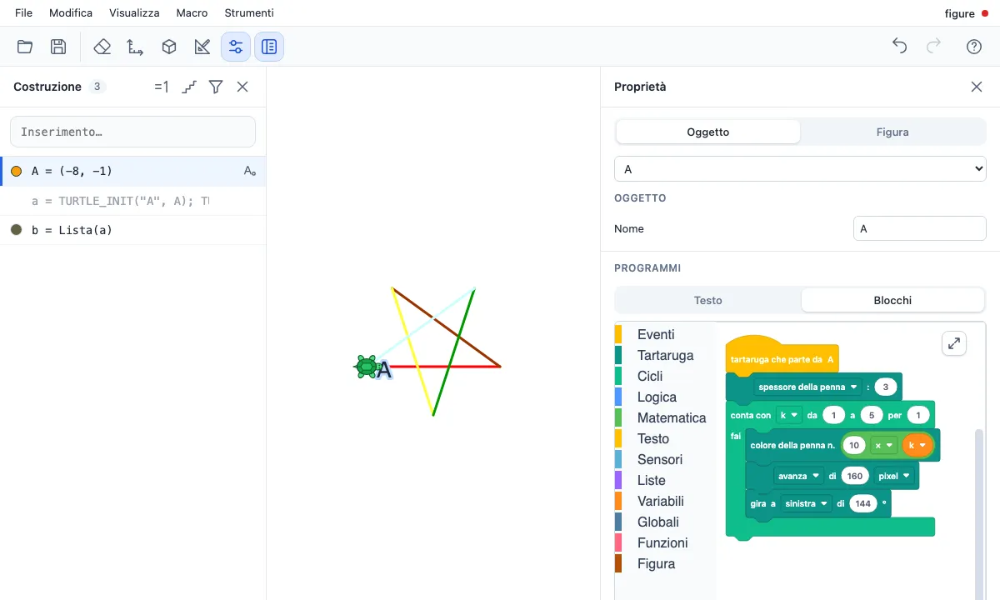

Espressioni e slider
Espressioni
Ogni riga che non è né un punto né un comando crea un’espressione, mostrata in alto a sinistra con due decimali. Il suo tipo si deduce dal testo:
| Riga | Tipo |
|---|---|
a = 3,
lista = [1, 2, 3]
|
costante |
t = "Ciao" |
testo |
f = 0.5x^2 - 4 |
funzione di x (y, z, t); f(2) la
chiama, f'(2) chiama la sua
derivata
|
f(x) = ax^2 + bx + c |
curva della funzione, tracciata:
ax si legge a x, vengono creati gli
slider a, b, c; anche f(2) la
chiama
|
E = d(A, B) |
misura, ricalcolata quando la figura si muove |
u = "AB = " + round(d(A, B)*100)/100
|
testo calcolato |
In una formula, un punto vale le sue coordinate, un segmento la sua lunghezza, una circonferenza il suo raggio, un poligono la sua area, un angolo la sua misura. Sintassi completa: Formule e programmi.
Un’espressione si sposta trascinandone il testo; agganciata a un punto, lo segue. Toccarla la seleziona, oppure ne scrive il nome durante un inserimento.
Slider
r = Cursore(0, 5, 2): da 0 a 5, valore 2. Gli
estremi possono essere espressioni o formule (Cursore(0, d(A, B), 1)). Incremento, lunghezza, orientamento, manopola e animazione
si impostano nelle
proprietà.
r = 5 lo trasforma di nuovo in una costante.
Un nome sconosciuto che inizia con una minuscola crea uno slider
da −5 a 5, con incremento 0,1 e valore 1:
A = (a, 4), d = y = m x + p. Una
lettera greca crea un angolo da 0 a 360°, con incremento 1° e
valore 45° (da 0 a 2π in radianti): P = (3; α). Una
riga rifiutata non conserva i suoi slider.
Punti calcolati
-
M = (x(B) + 1, y(A)): coordinate date da formule. -
N = Punto(2*B - A): formula il cui valore è un punto. -
P = (3; 60°): coordinate polari, raggio e angolo.
Quando il valore di una riga nome = formula è un
punto o una lista di punti, dei pulsanti a fine riga propongono
Punto,
Lista di punti,
Lista di segmenti o
Espressione. Invio
sceglie il pulsante evidenziato: punto o lista per un nome
maiuscolo, espressione altrimenti. Da qui
lista = [1, 2, 3] e non L = [1, 2, 3],
che verrebbe letto come un punto dello spazio.
Liste di punti
q = Lista(pts) disegna i punti dell’espressione
pts; un punto non definito interrompe il tracciato.
Un’espressione selezionata il cui valore è una lista di punti
propone anche e
nella zona contestuale (e
per un valore punto): la riga
viene scritta e l’espressione nascosta.
Successioni
L = Successione((k, k^2), k, -2, 2) pone i punti
(k, k²) per k da −2 a 2, con passo 1; un quinto argomento dà un
altro passo. L’elemento può essere anche un numero,
Segmento(P, Q), Retta(P, Q),
Circonferenza(O, r) o
Poligono(A, B, C, …), i cui argomenti sono formule
in k: Successione(Circonferenza(A, k), k, 1, 3).
Una successione può contenerne un’altra, i cui estremi leggono
la variabile della prima:
Successione(Successione((i, j), j, 1, i), i, 1, 4).
In una formula, una lista di punti si legge con il suo nome, a
partire da 0: L[0], L[k-1],
L[i][j] per successioni annidate,
L.length per il numero dei suoi elementi. Scrivi
2*i: 2i è un numero complesso.
Programmi
Un’espressione può essere un programma: istruzioni separate da
;, l’ultima delle quali dà il valore; può
formattare altri oggetti (S1.setHidden(1)).
Linguaggio:
Formule e programmi.
- (intestazione del pannello «Costruzione») apre un programma vuoto; Crea o Ctrl Invio crea l’espressione.
- Per un’espressione esistente, la sezione Definizione delle proprietà modifica il testo su più righe: Invio mantiene il rientro, Tab rientra, } riduce il rientro, Ctrl Invio applica, Esc ripristina, Formatta rientra secondo le parentesi graffe.
- Un errore seleziona la riga errata o il delimitatore non appaiato.
Blocchi e tartaruga
Un programma si scrive anche a blocchi: la sezione Definizione passa da Testo a Blocchi. I blocchi si trascinano dalle categorie (Cicli, Logica, Matematica, Testo, Variabili, Globali, Funzioni, Figura) e si agganciano sotto il blocco programma; un blocco restituisci dà il valore. Ogni modifica si applica subito e si annulla come le altre. Testo e blocchi mostrano lo stesso programma: la scelta resta per i successivi.
Le globali, condivise da tutti i programmi della figura, si creano nella categoria Globali con Crea una globale…; un programma le imposta, le aumenta o le legge.
Tartaruga, nella zona contestuale di un punto, crea la tartaruga che parte da quel punto e la apre a blocchi. Avanza (in pixel o in unità), gira (in gradi), alza o abbassa la penna, cambia colore e spessore, riempie, scrive, si gira verso un punto o ci va. Il suo disegno, una lista, segue il punto e gli oggetti che il programma legge. Finché il suo programma è mostrato, la tartaruga è disegnata dove finisce, rivolta nella sua direzione (una freccia in 3D, verde quando il suo dorso è rivolto verso di sé): ogni blocco aggiunto la mostra avanzare o girare.

Le tartarughe delle figure DGPad si aprono allo stesso modo: con
il pannello delle proprietà aperto, toccare la loro riga
blk_turtle_exp_… nel pannello «Costruzione». Un
programma con un’istruzione senza blocco resta in testo.